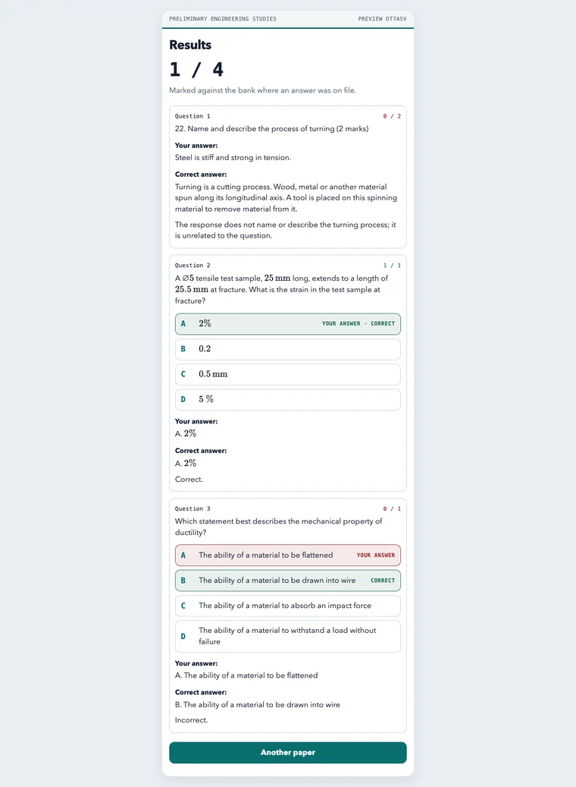

← All projects
Engineering practice papers
Year 11 Engineering Studies practice papers with instant marking and AI feedback on written answers.
No sign-in. Made-up data and sample AI responses. Opens in a new tab.
Designed and built independently, outside my school roles. Demonstrations use made-up data and sample AI responses.


The classroom problem
Students need far more exam practice than a teacher can mark by hand, and feedback on written answers often comes too late to help.
What it does
- Students sit a fresh random paper each time.
- Multiple-choice answers are marked instantly, with the reason.
- Written answers get marking and feedback against the criteria.
- A summary at the end shows what to work on next.
Where AI fits
AI marks written answers against the marking criteria and explains what was missing. In the demonstration version this feedback is pre-written.
The teacher’s role: Use the marking criteria and the end-of-paper summary to guide further practice.